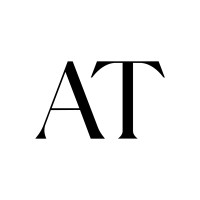
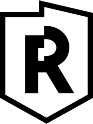
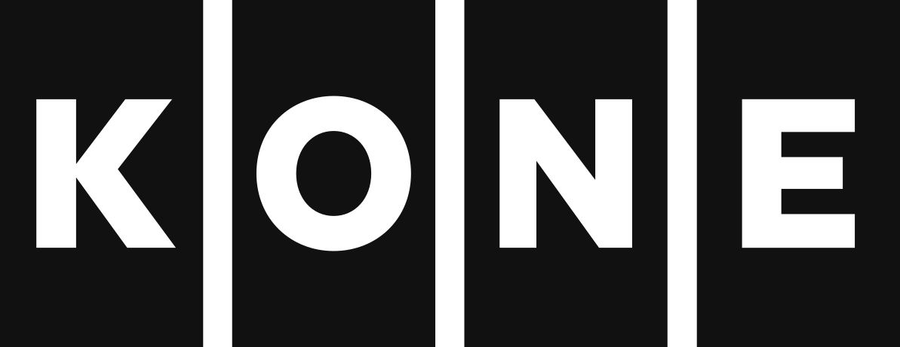

Epic Games – Design Systems, Senior Software Developer (2021 – 2024)
Built a cross-team React design system (components, icons, data-viz) replacing the previous MUI-based libraries with a lighter-weight system, adopted by three teams before its 1.0 release, with a focus on consistency, performance, and accessibility (screen-reader support, contrast work with designers); contributed to social overlay features such as parental PIN, shipped in Epic Games titles including Fortnite, Fall Guys, and Rocket League. React, TypeScript, CSS, Design tokens, Data visualization, Accessibility, Snapshot testing, UI/UX

Another Tomorrow – full site rewrite (2021)
In a two-developer team, shipped the full rewrite of AnotherTomorrow.co under a tight deadline – from Vue/Nuxt + Shopify to React/Gatsby + Contentful on the Chord sales platform, including the new landing page, where I focused on frontend. React, TypeScript, Gatsby, Contentful, CSS, UI

Reaktor Defence & Security (2021)
Full-stack development; details confidential due to client constraints. React, Node.js, TypeScript, CSS

KONE Care Contract sales tool (2019)
Global maintenance-contract tool in 30+ countries; joined the USA/Canada rollout implementing new requirements, including a business-rules UI for the offer wizard. React, Node.js, TypeScript, PostgreSQL, CSS
KONE Residential Flow sales tool (2018 – 2019)
Sales tool rolled out in 20+ countries with extensive localization; auto-generated sales PDFs; Salesforce integration work; handled technical handover to the follow-up team. React, Node.js, TypeScript, PostgreSQL, CSS, Salesforce

Adidas Glass (summer 2017)
Contributed to the React rewrite of the adidas global site; implemented responsive, accessible front-page components. React, TypeScript, CSS, UI
Reaktor internal projects
Reaktor Hunt coding puzzle game for recruiting; meeting-room system with facial-recognition lobby screen; Guidebook offline-first PWA from prototype to MVP. Go, WebAssembly, TypeScript, React, Node.js, CSS, PWA, UI/UX